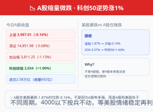

01
A股
沪指缩量微跌6点守住3987 · 科创50逆势涨1%一枝独秀
今日A股延续调整，但跌幅远小于隔夜美股。上证收报3987.01点（-0.16%），盘中曾冲高至3997点但未能站稳4000；深证收14,851.98（-0.68%）；创业板收3,811.25（-1.13%）。科创综指逆势收涨1.00%至2,034.30点，成为全市场唯一的亮点。
两市成交约2.58万亿元，较昨日继续缩量约692亿元。个股1370只上涨、4069只下跌——大盘股稳住但中小创继续出清。（来源：新浪财经、东方财富）
板块方面：氦气、工业气体、小金属、高带宽内存、电子化学品涨幅居前；影视院线、MLOps概念、空间计算、机器人概念跌幅居前。科创板一枝独秀逆市上涨，与隔夜美股的科技恐慌形成鲜明对比——A股科技股的估值水位本就低于美股，且受美债利率变化传导更间接。
北向资金：今日流向仍需关注。A股在美股暴跌近2%的情况下仅微跌0.16%，说明两个市场处于不同的周期阶段——美股是估值回调，A股是低位震荡。
🧩 传导链
隔夜美股暴跌（道指-1.87%/SOX-3.57%）→ A股低开 → 但沪指仅微跌0.16% → 科创50逆势涨1% → 说明A股核心矛盾在国内（缩量震荡）而非海外恐慌传导
📌 投资视角
A股在美股暴跌2%时仅跌0.16%，这不是A股有多强，而是A股本来就没涨——A股和美股的定价逻辑已脱钩。关注科创50是否能持续走强，这代表国内科技自主叙事能否脱离海外科技股独立运行。4000点以下按兵不动，等美股情绪稳定后再判断方向。
